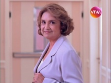
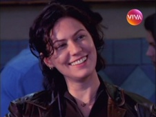
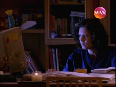
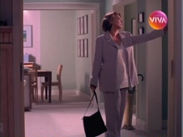
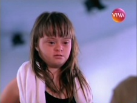
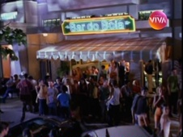
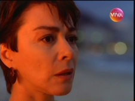
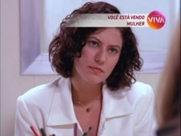
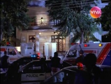

Mulher
Diversos episódios da 1ª temporada foram exibidos, originalmente, em uma ordem díspar à cronologia numérica da série. As datas com asterisco estão estimadas, e não são confirmadas.
| EPISÓDIO | EXIBIÇÃO | REPRISE | |||
|---|---|---|---|---|---|
| 1ª TEMPORADA - ANO 1 - 1998 | |||||
| 001 | 1x01 |  | "Princípio de Tudo" de Alvaro Ramos e Euclydes Marinho direção Daniel Filho codireção Mário Márcio Bandarra e José Alvarenga Jr. elenco convidado Adriana Esteves, Renée de Vielmond, Natália Lage, Marcelo Serrado e Luisa Thiré |
01/04/1998 | 18/05/2010 |
| 002 | 1x02 |  | "Prazeres e Limites" de Alvaro Ramos direção Daniel Filho codireção Cininha de Paula elenco convidado Carla Marins, Paulo Goulart, Tuca Andrada, Imara Reis, Vanessa Loes, Helio Ary, Mary Daniel, Suzana Faini e Priscilla Rosembaum |
08/04/1998 | 19/05/2010 |
| 003 | 1x03 |  | "O Fator Humano" de Doc Comparato direção Daniel Filho codireção José Alvarenga Jr. elenco convidado Arlete Salles, Marcos Frota, Marcello Antony e Erika Braga |
15/04/1998 | 20/05/2010 |
| 004 | 1x04 |  | "Jogos Proibidos" de Alvaro Ramos, em argumento de Antônio Calmon direção Daniel Filho codireção José Alvarenga Jr. elenco convidado Flávio Galvão, Eliane Giardini, Taís Araújo, André Gonçalves, Virginia Nowick, Antônio Pompeu e Elisa Lucinda |
22/04/1998 | 21/05/2010 |
| 29/04/1998 sem exibição: Amistoso da Seleção Brasileira, Brasil x Argentina | |||||
| 005 | 1x05 |  | "Escolhas" de Maria Helena Nascimento direção José Alvarenga Jr. elenco convidado Malu Mader, Paulo Betti, Leonardo Brício, Alexandre Borges, Suely Franco, Castrinho e Neusa Borges e apresentando Paula Werneck |
06/05/1998* | 24/05/2010 |
| 006 | 1x06 |  | "Correndo Atrás" de Euclydes Marinho, em argumento de Antônio Calmon direção Daniel Filho codireção Mário Márcio Bandarra e José Alvarenga Jr. elenco convidado Patrícia França, José de Abreu, Pedro Vasconcelos, Cristina Mullins, Anselmo Vasconcellos, Maria Cristina Gatti e Breno Moroni |
17/06/1998 | 25/05/2010 |
| 007 | 1x07 |  | "Ninho Vazio" de Euclydes Marinho, em argumento de Flávia Lins direção José Alvarenga Jr. elenco convidado Nívea Maria, Dennis Carvalho, Isabela Garcia, Nicete Bruno, Taumaturgo Ferreira e Ivone Hoffman |
13/05/1998* | 26/05/2010 |
| 008 | 1x08 |  | "Ética" de Maria Helena Nascimento direção Mário Márcio Bandarra e Cininha de Paula codireção César Rodrigues elenco convidado Mauro Mendonça, Luciana Braga, Paulinho Moska, Maria Mariana, Giuseppe Oristânio, Xuxa Lopes e Íris Bustamante |
27/05/1998 | 27/05/2010 |
| 009 | 1x09 | "Perdas e Danos" de Maria Helena Nascimento, em argumento de Lynn Mamet direção José Alvarenga Jr. codireção César Rodrigues elenco convidado Maitê Proença, Elizabeth Savalla, José Mayer, Cláudio Marzo, Ana Kutner, Maria Isabel de Lizandra e Miriam Freeland |
03/06/1998 | 28/05/2010 | |
| 010 | 1x10 |  | "Dia Quente" de Alvaro Ramos direção José Alvarenga Jr. codireção César Rodrigues elenco convidado Stênio Garcia, Pedro Paulo Rangel, Maurício Gonçalves, Stela Freitas, Lui Mendes, Maria Maya e Pedro Brício |
10/06/1998 | 31/05/2010 |